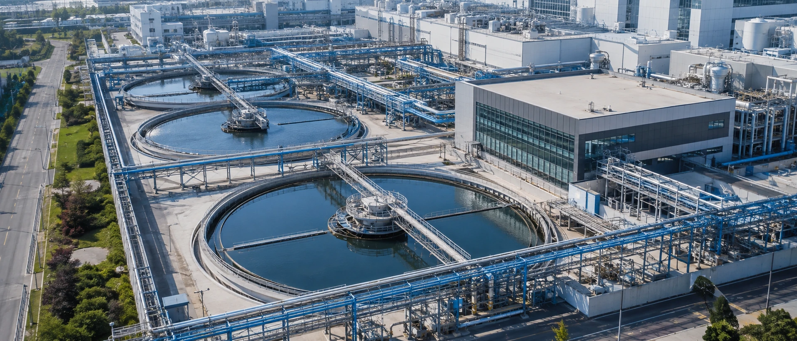
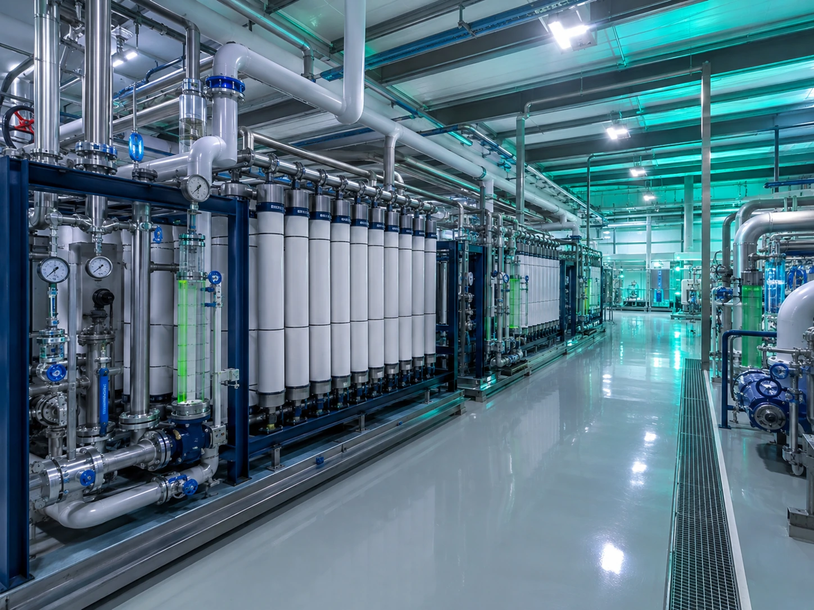

排水処理・再利用／特殊ガス回収
一滴の水、一分のガスまで資源として扱う——排水の分離処理、再生水利用、PFCs 削減・回収により、 環境法令とサステナビリティ目標を同時に達成します。

SCOPE · 業務範囲
私たちが担うこと
S-01
排水分離システム
酸アルカリ・フッ素系・CMP・有機・銅含有の5系統分離に対応する収集配管と、水質・水量バランスの計画。
S-02
排水処理工事
中和、凝集沈殿、生物処理、AOP 高度酸化ユニットの設計・発注・施工管理。
S-03
放流と法規制
放流水基準への適合性評価、排出許可の申請、放流口連続監視システムの構築。
S-04
再生水利用システム
RO／UF 膜システムの設計、再利用水質のグレード分けと、各プロセス再利用点への供給ループ計画。
S-05
汚泥処理
汚泥減量・脱水システムの設計と、資源化・処分ルートの評価および管理。
S-06
排ガス処理
Local Scrubber による点源処理の機種選定・配置と、セントラルスクラバーの風量・塔体設計。
S-07
PFCs 削減
SF₆、NF₃ など温室効果ガスの削減工事計画と、排出係数の調査、削減効果の検証。
S-08
特殊ガス回収工事
ガス精製・再利用ループの設計と、回収案の技術的フィージビリティおよび経済性の評価。
RECOVERY · 回収
回収はコストではなく、生産能力の保険です。
渇水期の供給リスクと厳格化する ESG 開示要求により、回収率は環境指標にとどまらず、事業継続性の指標となりました—— 回収率が1ポイント上がるごとに、断水リスクへのエクスポージャーは確実に減ります。TeraFab は水バランスと排ガス調査を起点に、 各回収案の技術的フィージビリティと投資回収期間を評価し、投じる一円ごとをリスク低減に向けます。

図名 TITLE排水処理エリアの空撮
システム SYSTEM WTR
レベル LEVEL場外 排水処理エリア
タイムコード TC00:00 / 00:08
METHOD · 実行方法
ターンキーコンサルタントの進め方
01
水・ガス調査
プロセス排水の水質・水量と排ガス組成を調査し、水バランス図と排出ベースラインを作成、回収率目標を設定します。
02
設計統合
分離配管・処理ユニット・再利用ループのプロセス設計を行い、BIM で B1 の配管と場外設備配置を調整します。
03
発注・調達と施工管理
処理設備、膜システム、スクラバーなど分離発注の仕様書作成、ベンダー選定と全工程の監理。
04
試運転・検収・引渡し
機能試運転と放流水質の検証を行い、排出許可の取得と運転保守ドキュメントの引渡しまで完了します。
85%+
プロセス水回収率の設計目標
5系統
排水分離設計（酸アルカリ／フッ素系／CMP／有機／銅含有）
PFCs
温室効果ガス削減工事
24hr
放流連続監視の体制
＊指標は計画・設計能力の一例です（FAB-1 事例図面に基づく）。実際の仕様はプロジェクト要件により決定します。
INTERFACE · 関連システム
回収システムは孤島ではありません
水バランス、監視・報告、用地配置は、機電設備・ファシリティ・建屋基盤にまたがります——このインターフェースこそ、ターンキーコンサルタントの価値です。